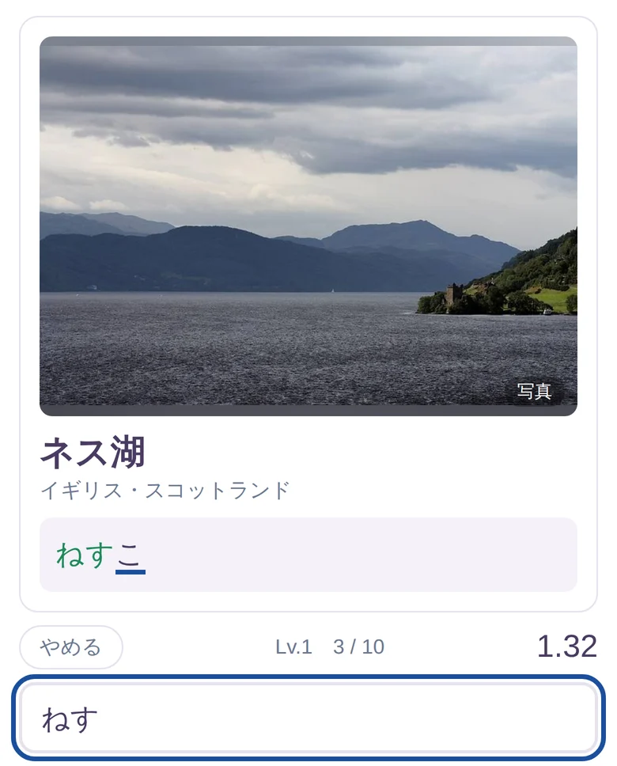
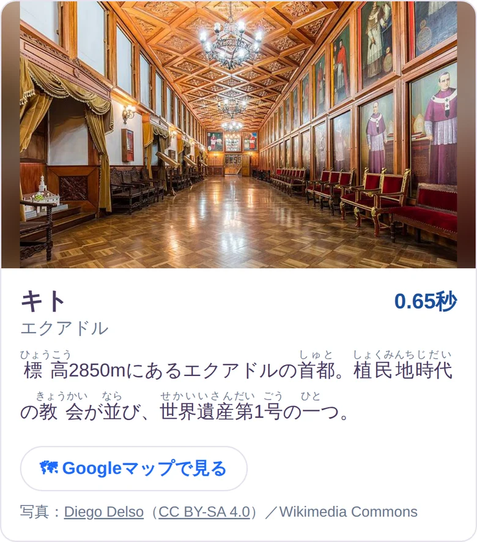
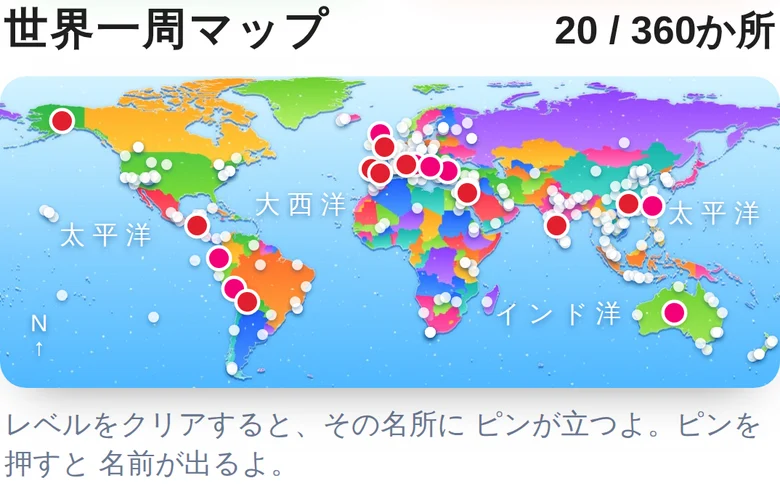
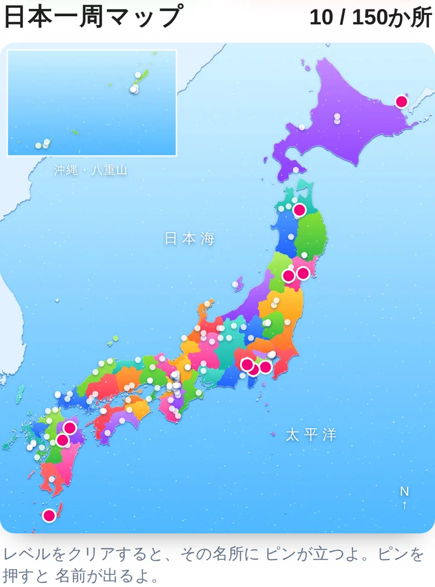

世界フリック旅行 とは

世界と日本の名所の名前を、ひらがなで フリック入力して タイムをきそうゲームです。打ち終わるたびに 名所の写真と やさしい解説が出て、地図にピンが立ちます。速くなるほど、世界の名所も 自然と おぼえられます。
いますぐ あそぶ無料・登録なし・インストールなしスマホでも タブレットでも パソコンでも、ひらいたら すぐ あそべます。
4つの旅
名所の旅と 地名の旅、それぞれ 世界と日本。あわせて 1,110か所。
🌍世界の旅名所 360か所・36レベル
🗾日本の旅名所 150か所・15レベル
🗺世界の地名国・町・山脈・川・海 350か所
📍日本の地名都道府県・町・平野・川 250か所
名所は 世界遺産検定、地名は 大学受験に出るレベルまで 入っています。小学生は レベル1から、受験生は 後ろのレベルから。
あそびかた
- 名所の写真と ひらがなが出るそのまま フリックで 打ち写します。漢字に 変えなくて OK。まちがえると 赤くなって 教えてくれます。

- 10問で 1レベル。トータルタイムで 勝負どのレベルも いつも 同じ10問・同じ順番なので、きのうの自分と タイムを くらべられます。自己ベストを こえたら お祝い。
- 打ち終わると 名所カード写真・どこの国か・やさしい解説(ふりがなつき)。「Googleマップで見る」を 押すと その場所に 飛べます。

- 地図に ピンが立つクリアした名所の場所に ピンが立って、旅の あしあとになります。ぜんぶ立てたら 世界一周・日本一周。


ここが うれしい
- 📸 ぜんぶ 本物の写真名所は 1か所ずつ 本物の写真つき。解説には ふりがなが ふってあるので、小学生でも 読めます。
- ⌨️ フリック入力が 速くなるひらがなを 見て そのまま打つだけなので、打ちかたの練習に ちょうどいい。濁点や 小さい字も 自然に おぼえます。
- 🌏 地理と 世界遺産が 身につく国の名前・首都・山脈・川・海峡。世界遺産検定・大学受験レベルの 地名まで 入っています。
- ⏱ 1レベル 1〜2分10問で 終わるので、すきま時間に 1回。
- 🗺 旅の あしあとが 残るピンの数が ふえていくのが 楽しい。1,110か所 ぜんぶ 立てられるかな。
おうちの方へ
- 無料ですお金は かかりません。課金も 広告も ありません。
- なにも 聞きません名前も メールアドレスも 入れる欄が そもそも ありません。自己ベストと ピンは お使いの端末の中にだけ 残ります。
- 人と やりとりする 道が ありませんチャット・ランキング・フォローの ような しくみは ありません。知らない人と つながる 入口を 作らない ためです。
- 外に出るのは Googleマップだけ「Googleマップで見る」と 写真の出どころ(Wikimedia Commons)へのリンクだけ、別の画面で ひらきます。
- 写真は ルールを守って 使っていますWikimedia Commons の パブリックドメイン・CC BY・CC BY-SA の写真だけを使い、カードに 撮影者と ライセンスを 書いています。
ホーム画面に 置くと アプリのように 使えます
iPhone の Safari で ゲームをひらき、下の 共有ボタン(□↑) → 「ホーム画面に追加」。「Webアプリとして開く」を ON にすると、Safari の枠なしで ゲームだけが ひらきます。
よくある質問
- 予測変換を使っても いいですか?
- ルールは「自分の指で 打ち切る」。予測変換や コピペを使うと タイムの意味が なくなるので、使わずに あそんでね。
- 漢字に 変換しないと だめ?
- ひらがなのまま で OK。句読点や スペースも 打たなくて 大丈夫です。
- パソコンでも あそべますか?
- あそべます。ローマ字入力の 練習にも なります。
- 記録は どこに残りますか?
- お使いの ブラウザの中だけ。別の端末には 持っていけません。ブラウザの データを消すと 記録も消えます。
- 写真が 出ない名所が あります
- ルールに合う写真が 見つからなかった 名所は、イラストで 出しています。
写真は Wikimedia Commons(パブリックドメイン / CC BY / CC BY-SA)。地図は Natural Earth のデータから 作りました。
ゲームへ